封装数据库连接
回忆
- jdbc connection pool
- 通过指定的四步
- 配置jdbc数据库连接池的jar包
- 资源配置(context.xml中设置关于pg的Resource)
- 在本应用的web.xml中使用相应的资源引用
- 在程序中使用jndi调用数据库连接资源
- 经过这四步我们就构建了一个可用的数据库连接池
- 我们用这个数据库连接池可以做怎样的操作呢
起手
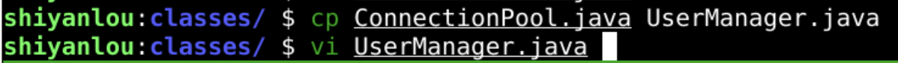
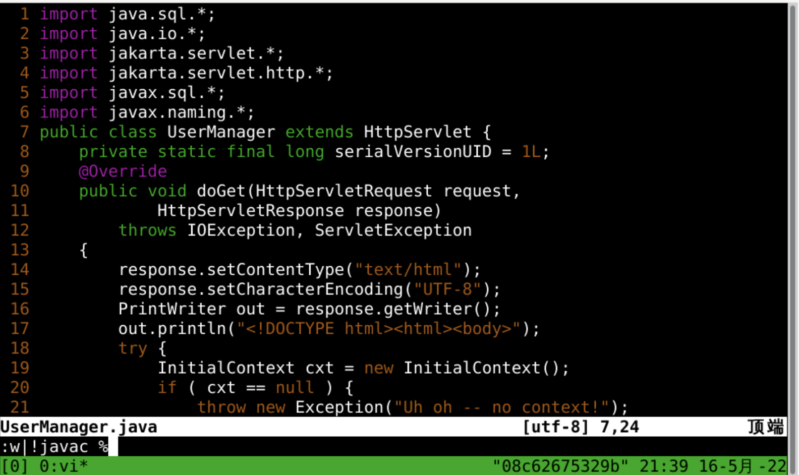
细化代码
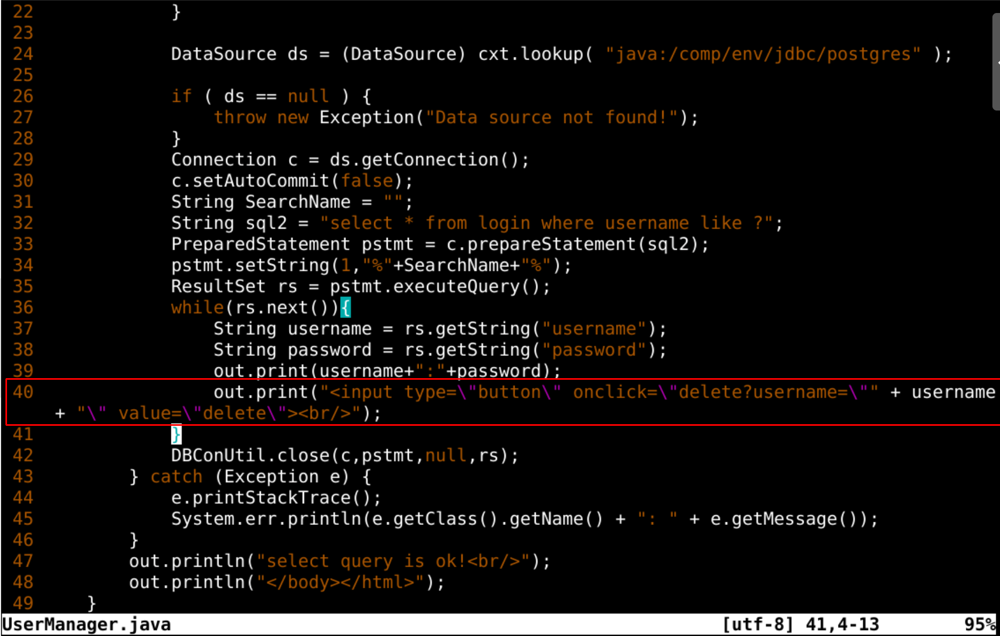
- 给每个用户记录后面添加了一个按钮
- 用来删除用户记录
配置路由
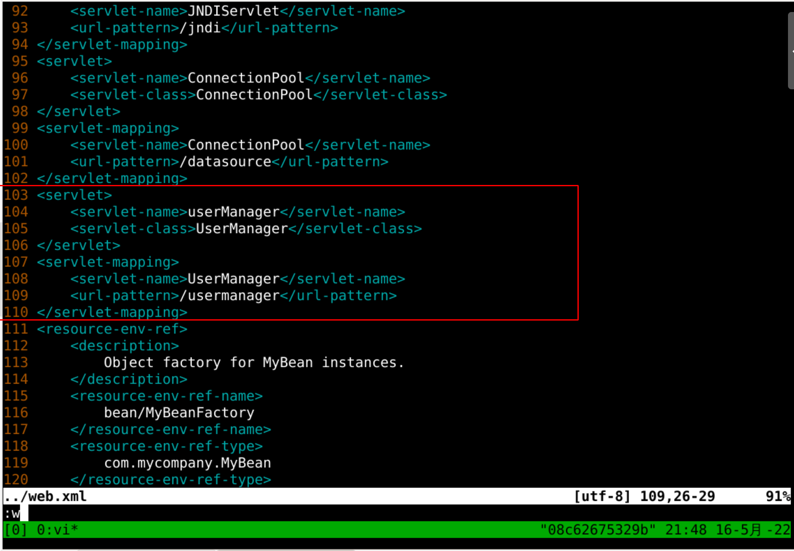
浏览器访问
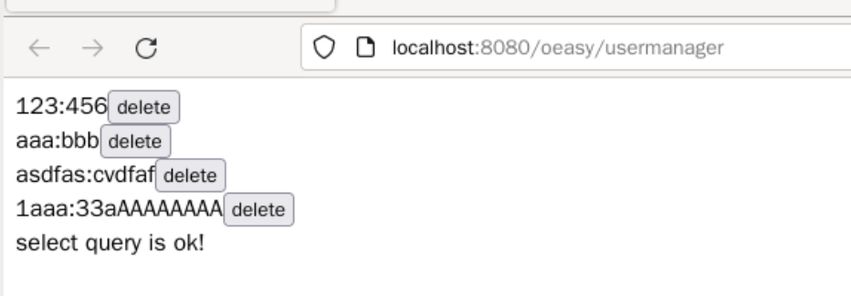
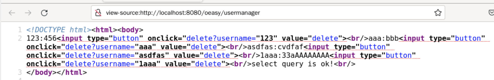
搜索
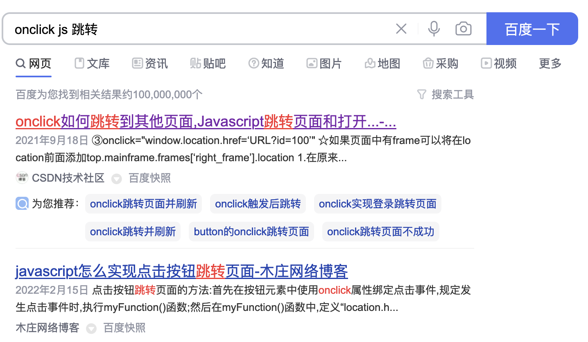
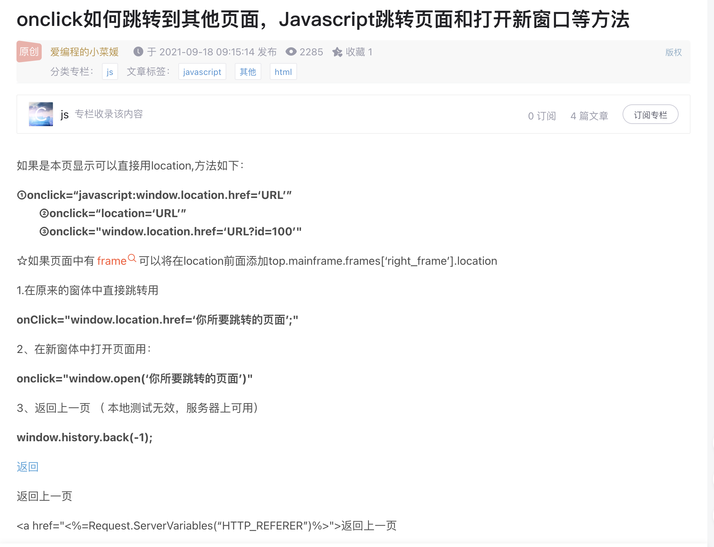
修改
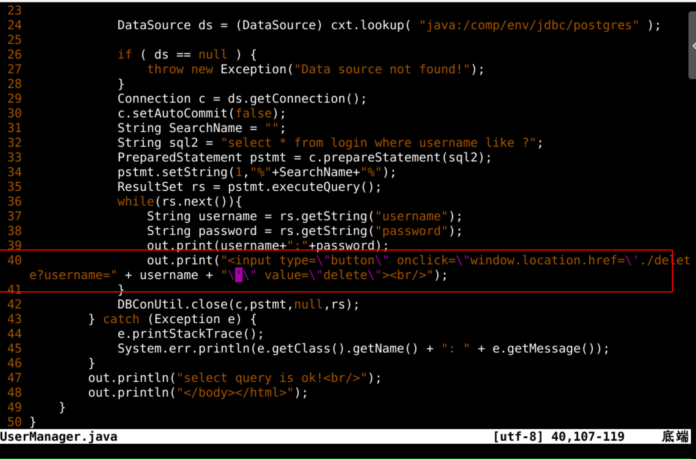
再访问
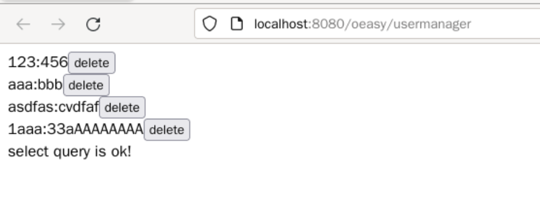
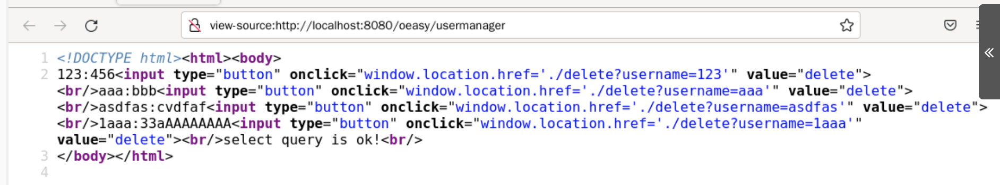
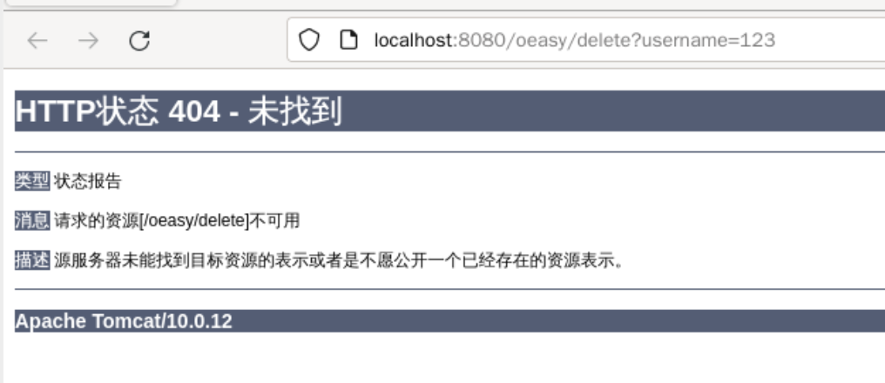
- 点击按钮是可以完成跳转的
- 后面就是添加删除的处理函数和路由
总结
- 我们这次应用数据库连接池
- 制作了一个管理页面
- 这个页面可以查询所有的用户记录
- 并且每个用户后面有一个删除按钮
- 删除应该如何完成呢
- 能否直接就写处理函数
- 让路由在编译class的时候自动生成呢？🤔
- 下次再说！👋